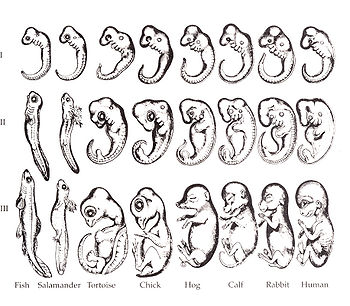

ERNST HEINRICH HAECKEL (1834-1919)
Ernst Heinrich Philipp August Haeckel, also written von Haeckel, was an eminent German biologist, naturalist, philosopher, physician, professor and artist who discovered, described and named thousands of new species, mapped a genealogical tree relating all life forms, and coined many terms in biology, including anthropology, ecology, phylum, phylogeny, stem cell and the Kingdom Protista. Haeckel promoted and popularised Charles Darwin's work in Germany and developed the controversial recapitulation theory ("ontogeny recapitulates phylogeny") claiming that an individual organism's biological development, or ontogeny, parallels and summarizes its species' evolutionary development, or phylogeny.
BIOGENETIC LAW

Ernst Haeckel compared the embryonic stages of different organisms and observed that during the embryonic development of any organism, its complete evolutionary history is repeated. Accoding to Haeckel ontogeny (embryoic developmet) recapitulates phyogeny (ancestory history). It is a largely discredited biological hypothesis that in developing from embryo to adult, animals go through stages resembling or representing successive stages in the evolution of their remote ancestors. With different formulations, such ideas have been applied and extended to several fields and areas, including the origin of language, biology, cognition and mental activities, anthropology, education theory and developmental psychology.